现在哪个端都删不了 wiki，因为服务端没有这个接口。提议加一个只有你本人能用的永久删除：网页在侧栏 ⋯ 菜单和 Wiki 设置页底部，iOS / macOS / Android 在 Wiki 设置页底部。这一页是真实页面按真实点击截的（今天的代码，加一份不进产品的原型）。条目数是示意，不是生产读数；orbit · vLLM preview 那行照你的截图。
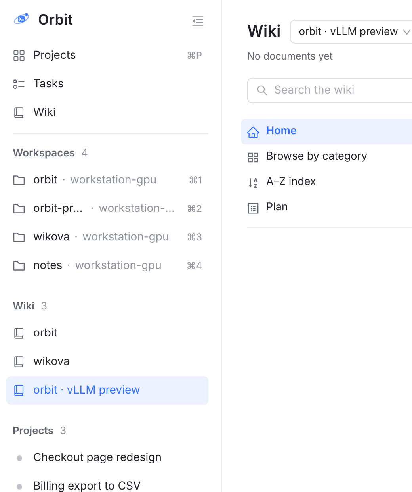
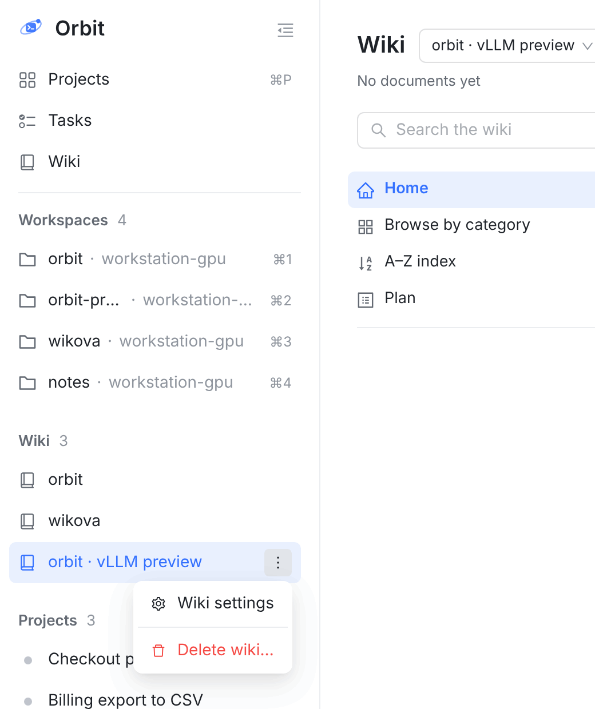
1⋯ 和 Workspace 行完全一样。悬停或菜单打开时才出现，右键整行也打开同一个菜单，等你处理的数字悬停时让位给 ⋯。Orbit 一致性
2两项，删除用分隔线隔开并标红。和 Workspace 的 Configure · Delete workspace… 同一个结构。新词Wiki settings · Delete wiki…
点错这一步不会有任何后果：Delete wiki… 只是打开确认框。
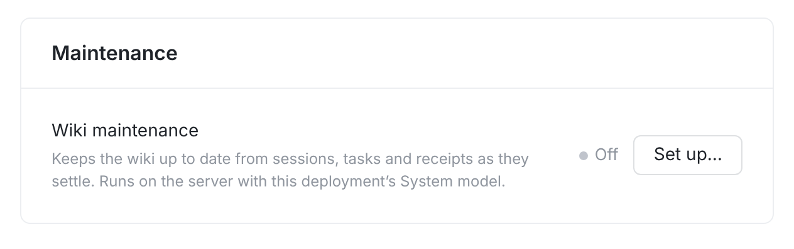
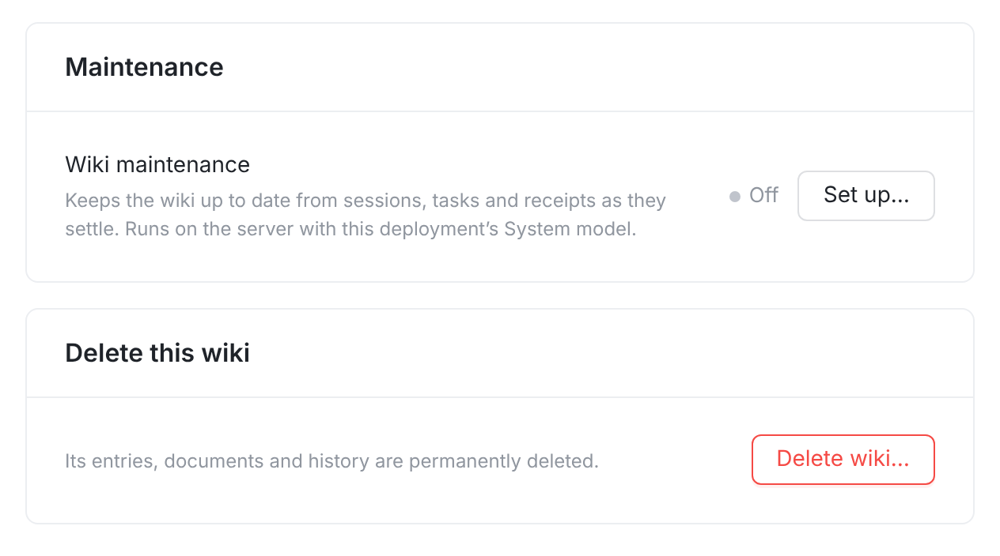
3放在最后，一句话说清后果。红框按钮只打开确认框，不直接删。这页其它控件都是立刻生效，只有这一个要确认。新词Delete this wiki · Its entries, documents and history are permanently deleted. · Delete wiki…
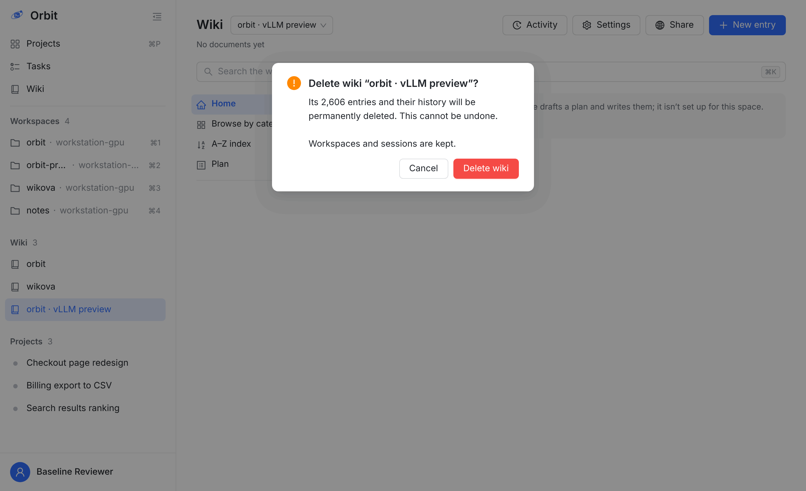
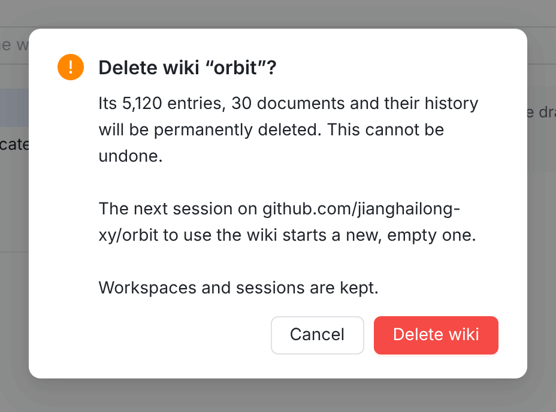
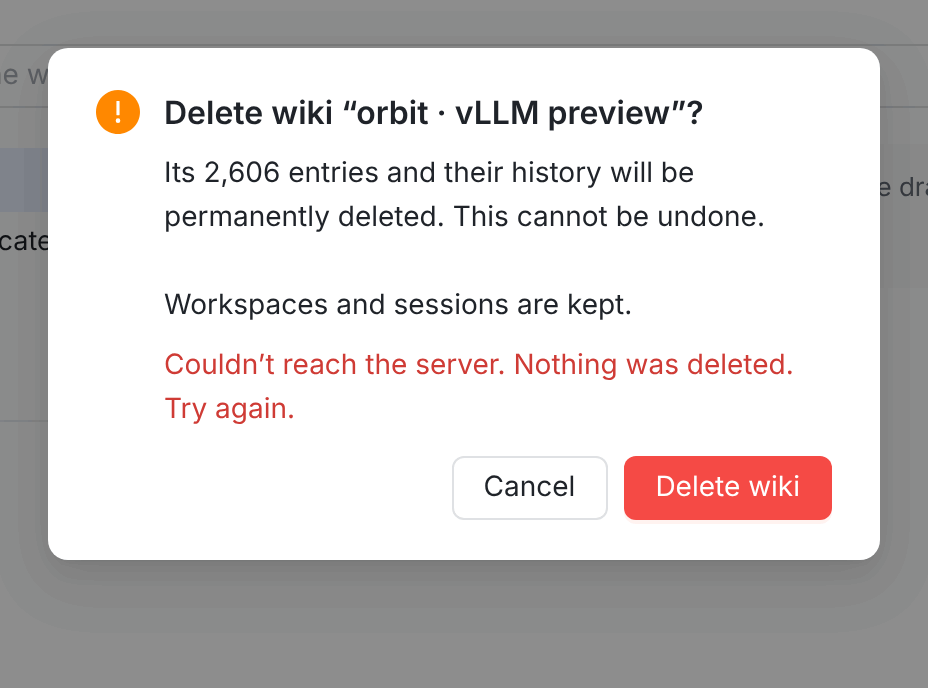
4标题点名，正文说数量。写法和组件沿用会话的 Delete permanently?：ConfirmDialog，焦点默认在 Cancel，点框外不会关。按 Enter 只会按到 Cancel。Orbit 一致性新词Delete wiki “…”? · Its N entries, N documents and their history will be permanently deleted. This cannot be undone. · Workspaces and sessions are kept. · Delete wiki
5有仓库的 wiki 删掉后会回来，所以要说。今天的规则是：这个仓库的会话一用 wiki 工具，没有 wiki 就新建一个（wiki.service.ts:882、:923）。这里按「保留今天的规则」画的。新词The next session on github.com/… to use the wiki starts a new, empty one.
6删除是一个数据库事务，失败不会删一半。错误显示在框内是 ConfirmDialog 现成的行为。
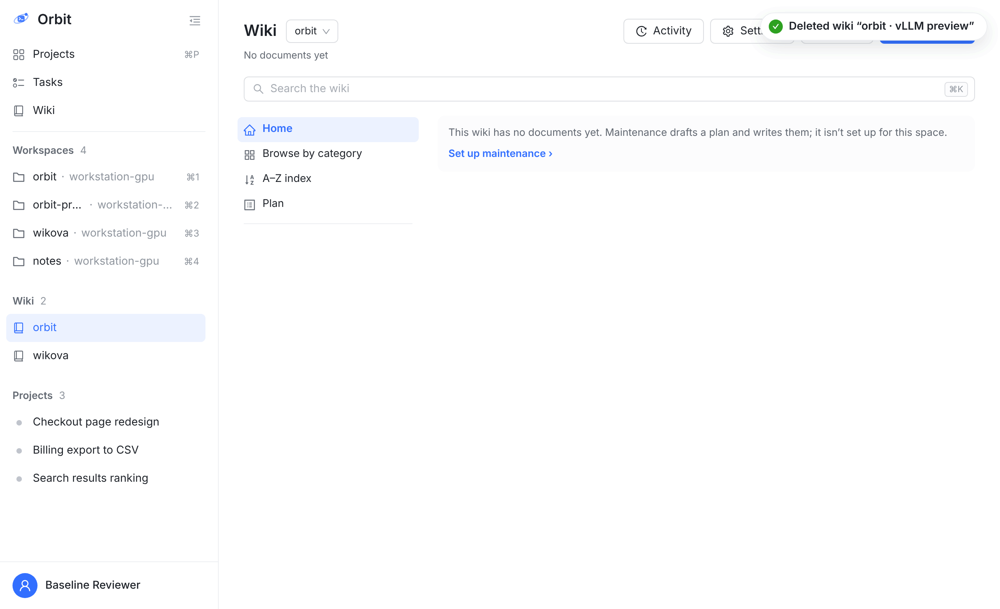
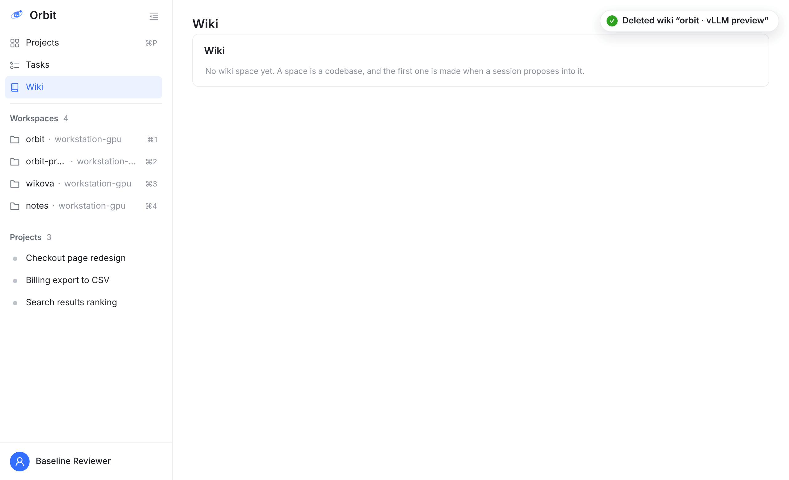
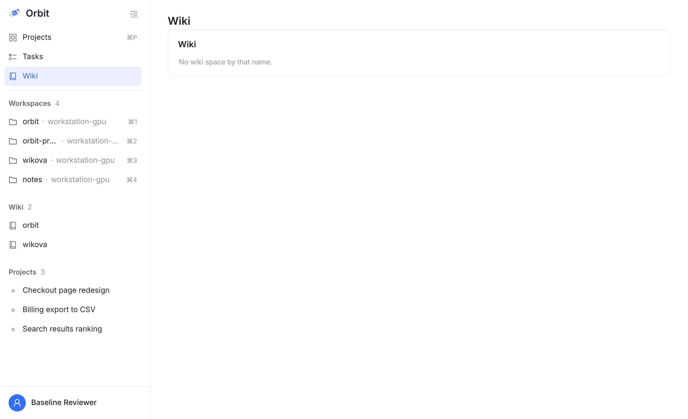
7落点走现有规则：当前 workspace 绑定的 wiki，其次上次看的，再其次文档最多的（wikiSpace.ts:52）。如果从侧栏删的是另一个 wiki，留在当前页不动。新词Deleted wiki “…”
8和 9现有的空状态文案，不新增、不改动。
文案四端相同。左边两张是真实的手机网页，iOS 和 Android 是按现有页面手绘的。原生端只放设置页底部：抽屉里 Wiki 只有一行入口、不按 wiki 分行（CompactShell.swift:999），没有哪一行能挂菜单。原生端 wiki 选择器底部现成的 Manage spaces 进的就是 Wiki 设置页，所以删除放在这页的底部，顺着已有的路就能找到。
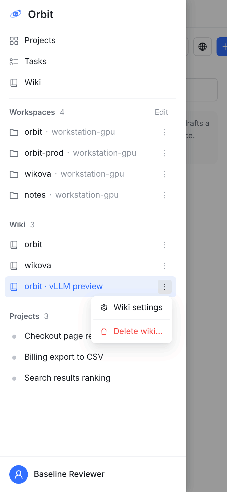
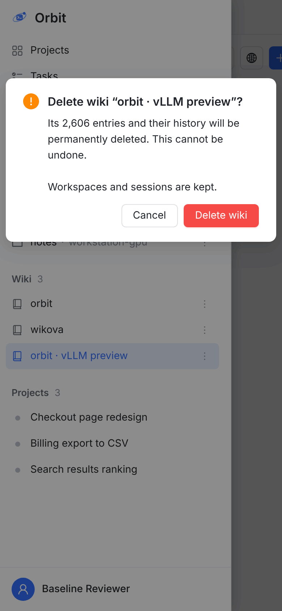
Its 2,606 entries and their history will be permanently deleted. This cannot be undone.
Workspaces and sessions are kept.
Its 2,606 entries and their history will be permanently deleted. This cannot be undone.
Workspaces and sessions are kept.
10手机网页的抽屉没有悬停，所以每行常驻 ⋯，和 Workspace 行同一条 CSS 规则。Orbit 一致性
iOS / macOS：Wiki 设置页 Form 的最后一节，一个红字行加一句 footer。确认走现成的 orbitConfirmation：手机上是 alert，iPad 和 macOS 上是 confirmationDialog，不用分开写（ConfirmationStyle.swift）。服务端拒绝时要把原因显示出来，不能关框后什么都不说。Orbit 一致性
Android：WikiCard 里一个 SettingsButtonRow(destructive = true)，确认用 AlertDialog，和 Delete agent 同款。Orbit 一致性
删完之后：原生端退出设置页回到 Wiki 首页，打开现有规则选出的下一个 wiki，并提示 Deleted wiki “…”；一个都不剩时显示现有空状态。
wiki 之外只有公开分享链接指向它，而且链接随它一起删（schema.prisma:2201）。数据库从一开始就按「删 space 级联删除」设计（docs/wiki-contract.md:164）。
你要删的 vLLM preview 没有仓库，不受这条影响：它的名字来自 title，只有没有仓库的 wiki 才这样显示（wikiSpace.ts:30）。但正式功能要回答这个问题：今天这个仓库的会话一用 wiki 工具，没有 wiki 就会新建。
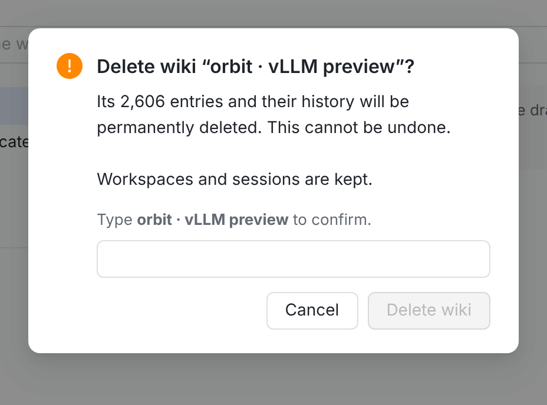
| 情况 | 结果 | 依据 / 状态 |
|---|---|---|
| 谁能删 | 只有你本人在已登录的客户端里。Agent 会话回 WIKI_OWNER_CHANNEL_ONLY，个人访问令牌回 OWNER_INTERACTIVE_CREDENTIAL_REQUIRED。不提供 MCP 工具和 CLI 命令。 | 和 Workspaces 卡的开关同一道门（wiki.controller.ts:164） |
| 一起删掉 | 条目及其修订、出处、使用记录，变更集，主题和文章，plan 和文档，作业，维护记录，workspace 绑定，公开分享链接。 | 外键都是级联，条目之间的取代关系两端同时删除（docs/wiki-contract.md:164）。wiki-delete-space.pg.spec.ts 在真实 PostgreSQL 上验证 |
| 不动 | Workspace、会话、任务、项目。会话记录和评论里已有的文字保留，其中的 orbit-wiki: 链接指向的内容已不存在。 | wiki 之外没有表依赖它（只有 ShareLink） |
| 删除时有作业在跑 | 不拦。作业行随 wiki 消失，worker 下一次写入失败后结束，不会重试，也不会把 wiki 建回来。 | wiki-delete-space.pg.spec.ts 用真实执行器验证 |
| 正在用这个 wiki 的会话 | 下一次调 wiki 工具时：有仓库的按拍板 2，没有仓库的回现有的 WIKI_SPACE_UNBOUND。 | wiki.service.ts:863 |
| 别的设备开着这个 wiki | 收到 wiki.changed 后刷新。网页显示 No wiki space by that name.；原生端没有按 wiki 区分的地址，转到现有规则选出的下一个 wiki。 | 图 9；WikiModel.currentSpace |
| 数字从哪来 | 条目数用现有的 GET /wiki/spaces/:id/health（在用的条目），文档数用列表行的 docs.written。读不到时写不带数字的句子，确认框照常打开。 | 不新增读接口 |
| 很大的 wiki | 同步删除，按钮转圈，框不关。 | 实测：10,000 条目、300,000 条使用记录约 0.9 秒（本地空闲 PostgreSQL），不需要后台删除 |
wiki.controller.ts wiki.service.ts pat-owner-channel-routes.ts tenant-isolation-cases.ts db-write-inventory.ts wiki.contract.json docs/wiki-contract.mdTasksSidePanel.tsx WikiSettingsPage.tsx WikiDeleteDialog.tsx wikiReviewMode.ts wikiWrites.ts index.cssAPIClient.swift WikiModel.swift WikiSettingsView.swift WikiModeLogic.swiftWikiClient.kt WikiStore.kt WikiSettingsScreen.kt WikiCopy.kt WikiLogic.kt